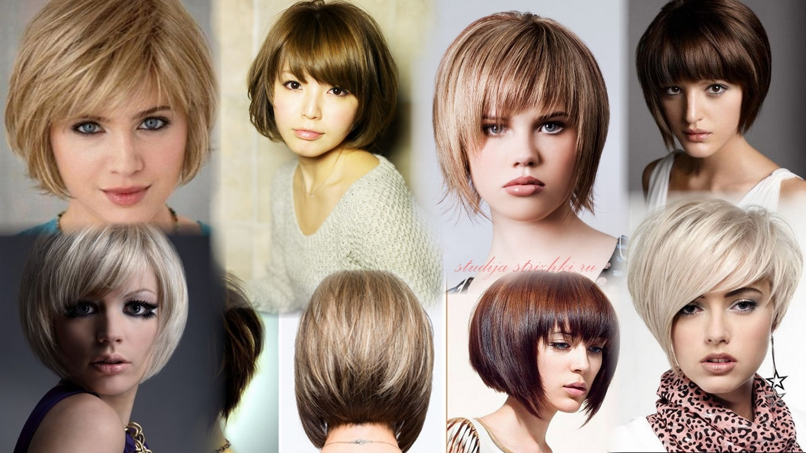
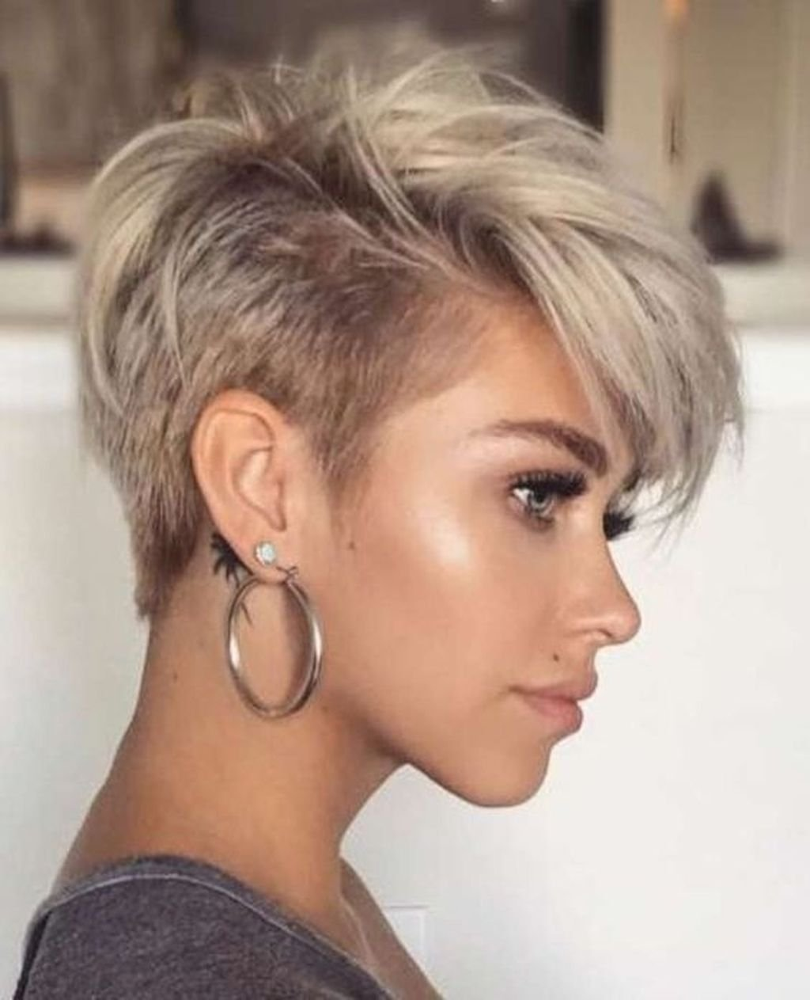
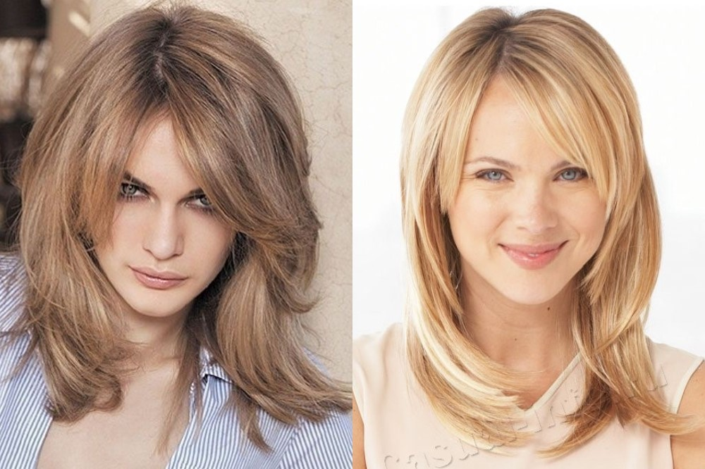

Слово «каре» появилось в русской лексике в XVII веке. И, скорее всего, связано с развитием военного дела, так как обозначает особый тактический прием построения пехоты при отражении атаки конницы. Само слово имеет латинские корни. Происходит от латинского «quadrātum», но заимствовано из французского – напрямую или через немецкий. Фактически это французское слово «carrе́» [каррэ], переделанное на русский манер в произношении и написании – каре [карэ].
Пикси – это стильная и модная короткая стрижка с мальчишеским характером, которая открывает шею. Чаще всего она отличается асимметричной формой и прикорневым объёмом. Эта прическа подчеркивает преимущества внешности и пользуется популярностью у женщин всех возрастов, так как визуально омолаживает. Каждая женщина хоть раз, но задумывалась о том, чтобы сделать себе короткую стрижку. Но, как правило, максимум, на что решается большинство, – это каре или боб. Пикси может показаться слишком смелым экспериментом, особенно если большую часть своей жизни вы носили длинные волосы. Но эта сверхкороткая стрижка не только выглядит роскошно, но и очень лёгкая в уходе, удобная и идеальна для жаркого летнего периода.
Востребованность каскадных стрижек объясняется возможностью с их помощью скрыть большое количество недостатков, а именно, неправильную форму лица, редкие и тонкие волосы, оттопыренные ушные раковины. Текстурированные прически позволяют добиться эффекта визуального объема и густоты на любом типе локонов. Кроме того, именно на их основе открывается возможность создания большого разнообразия стильных укладок для ежедневной смены образа. Прически, выполненные в форме каскада, находятся на пике популярности вот уже не один сезон. Данная техника использовалась мастерами во все времена, претерпевая изменений, согласно модным тенденциям. Востребованность каскадных стрижек объясняется возможностью с их помощью скрыть большое количество недостатков, а именно, неправильную форму лица, редкие и тонкие волосы, оттопыренные ушные раковины. Текстурированные прически позволяют добиться эффекта визуального объема и густоты на любом типе локонов. Кроме того, именно на их основе открывается возможность создания большого разнообразия стильных укладок для ежедневной смены образа.
